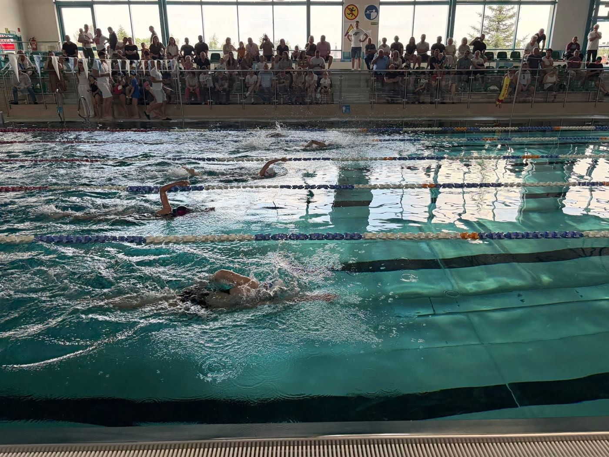
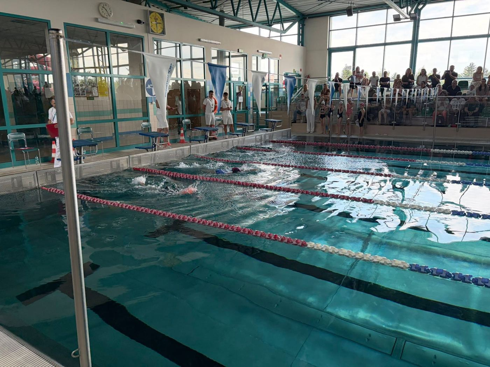
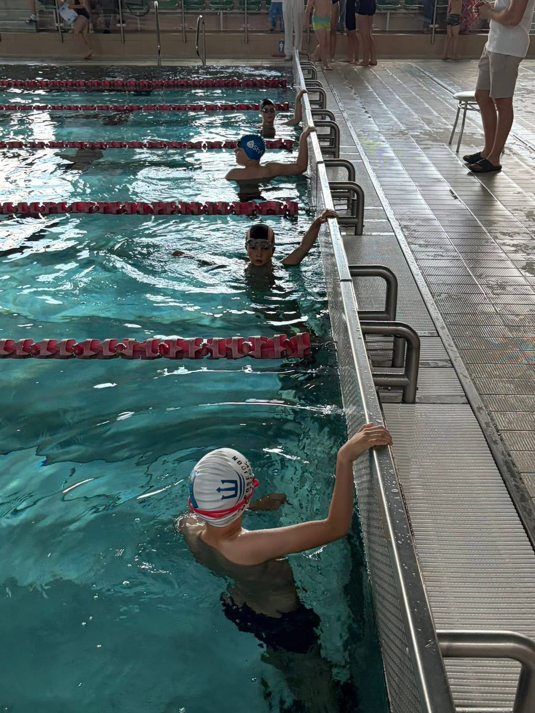
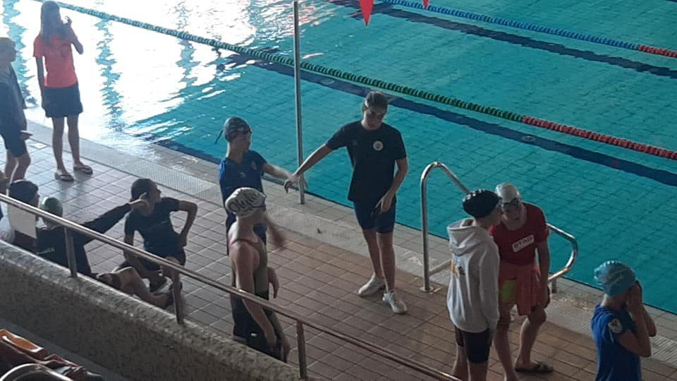
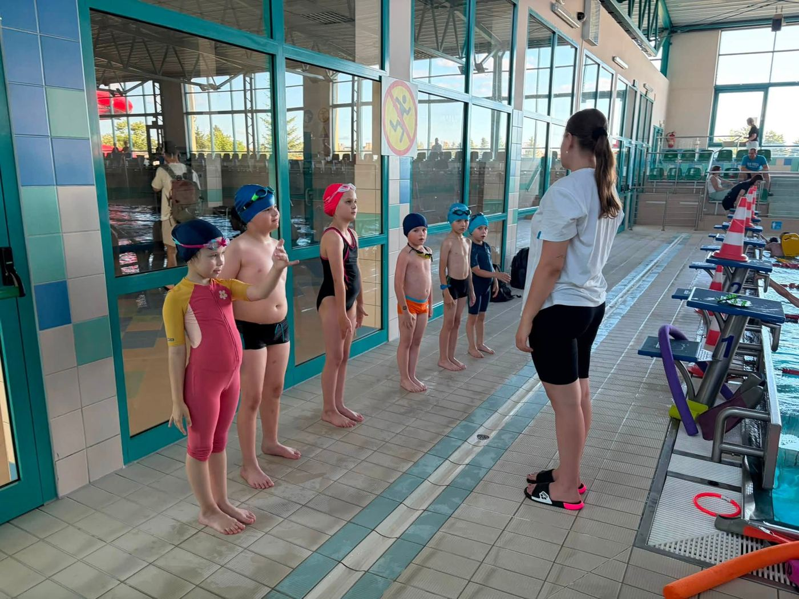

AGrupa A
Najliczniejsze treningi w tygodniu: trzy zajęcia po 75 minut.
DniPon, Śr, Pt
Godziny17:30–18:45
TrenerzyMariusz Mroziewicz
Wiek
Kryta pływalnia, ul. Burmistrza St. Śniegockiego 3
Zapisz się
Strona główna / Treningi
Od pierwszych ruchów w wodzie po starty w zawodach. Wybierz grupę dla dziecka albo dla siebie.

ANajliczniejsze treningi w tygodniu: trzy zajęcia po 75 minut.
Kryta pływalnia, ul. Burmistrza St. Śniegockiego 3
Zapisz się
BTrzy treningi w tygodniu po 60 minut.
Kryta pływalnia, ul. Burmistrza St. Śniegockiego 3
Zapisz się
CDwa treningi w tygodniu po 60 minut.
Kryta pływalnia, ul. Burmistrza St. Śniegockiego 3
Zapisz się D
DZajęcia raz w tygodniu na basenie rekreacyjnym.
Kryta pływalnia, ul. Burmistrza St. Śniegockiego 3
Zapisz się
EGrupa dla najmłodszych: dzieci w wieku 6–7 lat.
Kryta pływalnia, ul. Burmistrza St. Śniegockiego 3
Zapisz sięPierwsze kroki
Zadzwoń lub wypełnij formularz. Powiedz nam o wieku i umiejętnościach.
Trener zaproponuje grupę i termin pierwszych zajęć.
Deklaracja członkowska i oświadczenie RODO – do pobrania na stronie.
Wpisowe płatne jednorazowo, potem miesięczna składka członka wspierającego.
Harmonogram
| Grupa | Pon | Wt | Śr | Czw | Pt | Sob |
|---|---|---|---|---|---|---|
| Grupa A Mariusz Mroziewicz · Tory 2, 3, 4 · basen sportowy | 17:30–18:45 | – | 17:30–18:45 | – | 17:30–18:45 | – |
| Grupa B Mariusz Mroziewicz · Tory 2, 3 · basen sportowy | 19:00–20:00 | – | 19:00–20:00 | – | 19:00–20:00 | – |
| Grupa C Mariusz Mroziewicz, Franciszek Łyszkowski · Tory 2, 3 · basen sportowy | 17:00–18:00 | – | 17:00–18:00 | – | – | – |
| Grupa D Alicja Jagiełło, Mariusz Osica · Tor 1 · basen rekreacyjny | 18:00–19:00 | – | – | – | – | – |
| Grupa E Alicja Jagiełło, Mariusz Osica · Tor 1 · basen rekreacyjny | od 19:00 | – | – | – | – | – |
Zajęcia odbywają się na krytej pływalni w Pułtusku. Tory 2–4 – basen sportowy, tor 1 – basen rekreacyjny.
Miejsce treningów
ul. Burmistrza Stanisława Śniegockiego 3, 06-100 Pułtusk
Wspólnie z MOSiR Pułtusk organizujemy tu również zawody.
Pytania rodziców
Nie. W grupie nauki pływania zaczynamy od oswojenia z wodą. Trener oceni umiejętności na pierwszych zajęciach.
strój kąpielowy, czepek, okularki, klapki, ręcznik
Wpisowe jest opłatą jednorazową, a co miesiąc obowiązuje składka członka wspierającego. Kwoty: . Dane do przelewu znajdziesz na stronie Kontakt.
Deklaracja członkowska oraz oświadczenie dotyczące przetwarzania danych i wizerunku. Dorośli w grupie Masters wypełniają też oświadczenie o stanie zdrowia. Pobierz dokumenty.
Zadzwoń albo napisz – odpowiemy i dobierzemy grupę.